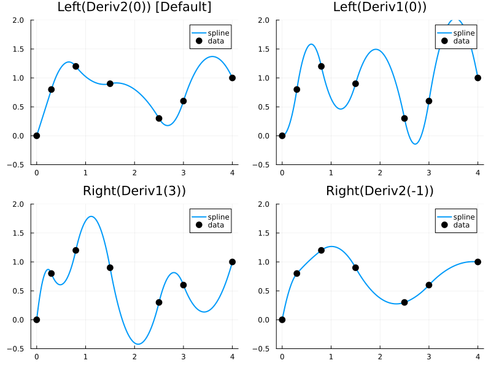
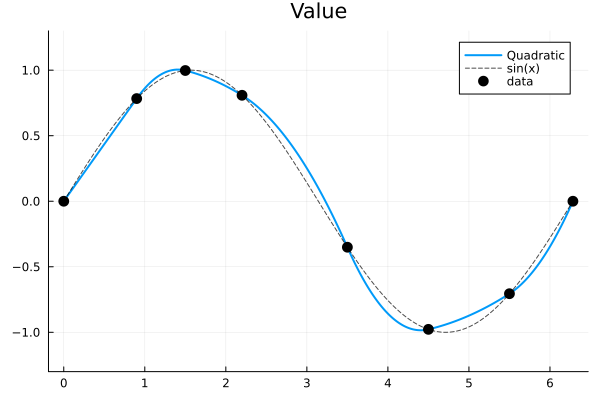
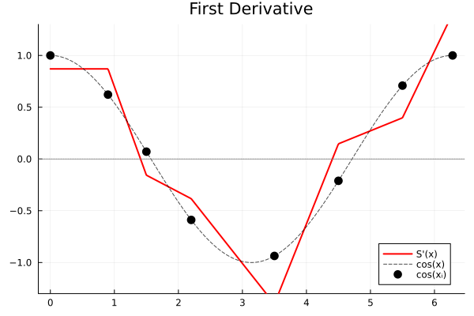
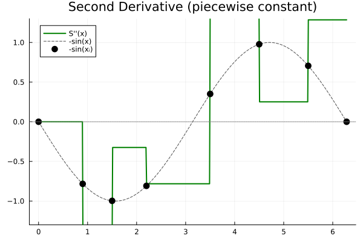

Quadratic Interpolation
C¹-continuous spline interpolation with smooth first derivatives.
Key Feature: Single-endpoint boundary condition — specify constraint at only one end.
| BC | Description |
|---|---|
Left(Deriv1(v)) | S'(left) = v |
Left(Deriv2(v)) | S''(left) = v |
Right(Deriv1(v)) | S'(right) = v |
Right(Deriv2(v)) | S''(right) = v |
Default: Left(Deriv2(0)) — makes the first interval linear.
API Reference
One-shot (construction + evaluation)
| Function | Description |
|---|---|
quadratic_interp(x, y, xq) | Quadratic interpolation at point(s) xq |
quadratic_interp(x, y, xq; bc=...) | With boundary condition |
quadratic_interp!(out, x, y, xq) | In-place quadratic interpolation |
quadratic_interp!(out, x, y, xq; bc) | In-place with BC |
Re-usable interpolant
| Function | Description |
|---|---|
itp = quadratic_interp(x, y) | Create quadratic interpolant |
itp = quadratic_interp(x, y; bc=...) | Create with boundary condition |
itp(xq) | Evaluate at point(s) xq |
itp(out, xq) | Evaluate at xq, store result in out |
Derivatives
| Function | Description |
|---|---|
quadratic_interp(x, y, xq; deriv=1) | First derivative (continuous) |
quadratic_interp(x, y, xq; deriv=2) | Second derivative (piecewise constant) |
deriv1(itp) | First derivative view |
deriv2(itp) | Second derivative view |
x = range(0.0, 2π, 15)
y = sin.(x)
xq = range(x[1], x[end], 200)
# One-shot
quadratic_interp(x, y, 1.0) # default BC
quadratic_interp(x, y, 1.0; bc=Left(Deriv1(1.0))) # S'(left) = 1.0
quadratic_interp(x, y, 1.0; bc=Right(Deriv2(-1.0))) # S''(right) = -1.0
out = similar(xq)
quadratic_interp!(out, x, y, xq) # in-place (zero-allocation)
# Interpolant
itp = quadratic_interp(x, y; bc=Left(Deriv2(0.0)))
itp(1.0) # evaluate at single point
itp(xq) # evaluate at multiple points
# Derivatives
quadratic_interp(x, y, 1.0; deriv=1) # continuous first derivative
d1 = deriv1(itp); d1(1.0) # same via interpolant
d2 = deriv2(itp); d2(1.0) # piecewise constantIf you know the derivative at one endpoint (e.g., from physics), use Deriv1. Otherwise, Left(Deriv2(0)) is a safe default.
Boundary Condition Comparison
Using non-uniform data to highlight how different boundary conditions affect the spline shape:
using FastInterpolations
using Plots
# Non-uniform grid with asymmetric data
x = [0.0, 0.3, 0.8, 1.5, 2.5, 3.0, 4.0]
y = [0.0, 0.8, 1.2, 0.9, 0.3, 0.6, 1.0]
xq = range(x[1], x[end], 200)
p = plot(layout=(2,2), size=(800, 600), legend=:topright)
for (i, (bc, label)) in enumerate([
(Left(Deriv2(0.0)), "Left(Deriv2(0)) [Default]"),
(Left(Deriv1(0.0)), "Left(Deriv1(0))"),
(Right(Deriv1(3.0)), "Right(Deriv1(3))"),
(Right(Deriv2(-1.0)), "Right(Deriv2(-1))")
])
yq = quadratic_interp(x, y, xq; bc=bc)
plot!(p[i], xq, yq, label="spline", linewidth=2)
scatter!(p[i], x, y, label="data", markersize=6, color=:black)
title!(p[i], label)
ylims!(p[i], -0.5, 2.0)
end
p
- Left(Deriv2(0)) [Default]: First interval is linear (no curvature at left)
- Left(Deriv1(0)): Starts flat (zero slope at left endpoint)
- Right(Deriv1(3)): Ends with steep upward slope
- Right(Deriv2(0)): Last interval is linear (no curvature at right)
Derivative Visualization
using FastInterpolations
using Plots
x = [0.0, 0.9, 1.5, 2.2, 3.5, 4.5, 5.5, 2π] # 8 non-uniform points
y = sin.(x)
xq = range(x[1], x[end], 500)
itp = quadratic_interp(x, y)
d1_view = deriv1(itp)
d2_view = deriv2(itp)FastInterpolations.DerivativeView{2, QuadraticInterpolant{Float64, Vector{Float64}, Vector{Float64}}}(QuadraticInterpolant{Float64, Vector{Float64}, Vector{Float64}}([0.0, 0.9, 1.5, 2.2, 3.5, 4.5, 5.5, 6.283185307179586], [0.0, 0.7833269096274834, 0.9974949866040544, 0.8084964038195901, -0.35078322768961984, -0.977530117665097, -0.7055403255703919, -2.4492935982947064e-16], [0.9, 0.6, 0.7000000000000002, 1.2999999999999998, 1.0, 1.0, 0.7831853071795862], [0.0, -0.855694063264124, -0.1621833320126498, -0.3909440422185847, 0.7732339276080753, 0.1255027544621069, 0.6427182191379103], [0.8703632329194261, 0.8703632329194261, -0.15646964299752264, -0.38352630781523245, -1.3999808175835524, 0.14648703763259818, 0.397492546556812, 1.4042274783276938], Val{:none}()))Value: $S(x)$
plot(xq, itp.(xq), label="Quadratic", linewidth=2)
plot!(xq, sin.(xq), label="sin(x)", linestyle=:dash, alpha=0.7, color=:black)
scatter!(x, y, label="data", markersize=6, color=:black)
ylims!(-1.3, 1.3)
title!("Value")
First Derivative: $S'(x)$
plot(xq, d1_view.(xq), label="S'(x)", linewidth=2, color=:red)
plot!(xq, cos.(xq), label="cos(x)", linestyle=:dash, alpha=0.7, color=:black)
scatter!(x, cos.(x), label="cos(xᵢ)", markersize=6, color=:black)
hline!([0], color=:gray, linestyle=:dot, label=nothing)
ylims!(-1.3, 1.3)
title!("First Derivative")
Second Derivative: $S''(x)$
plot(xq, d2_view.(xq), label="S''(x)", linewidth=2, color=:green)
plot!(xq, -sin.(xq), label="-sin(x)", linestyle=:dash, alpha=0.7, color=:black)
scatter!(x, -sin.(x), label="-sin(xᵢ)", markersize=6, color=:black)
hline!([0], color=:gray, linestyle=:dot, label=nothing)
ylims!(-1.3, 1.3)
title!("Second Derivative (piecewise constant)")
When to Use
- C¹ continuity (smooth first derivative) is sufficient
- Known derivative at one endpoint
- Simpler than cubic, smoother than linear